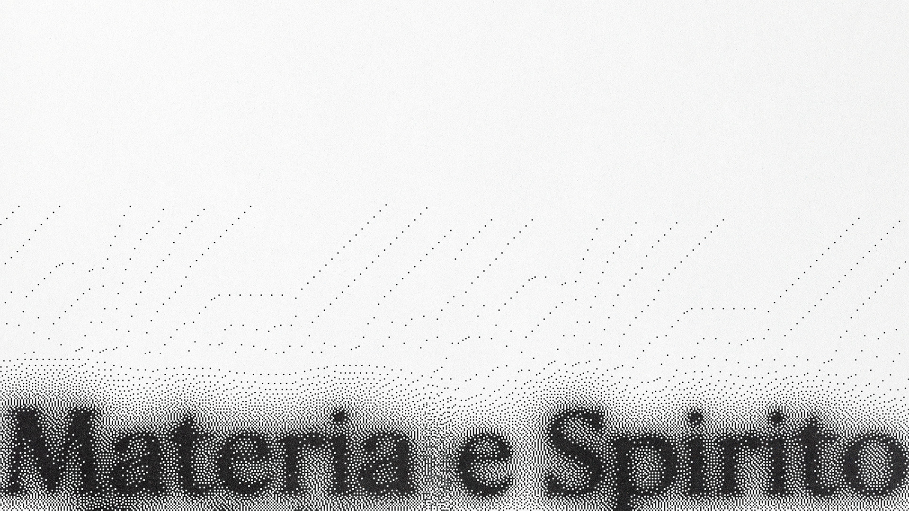
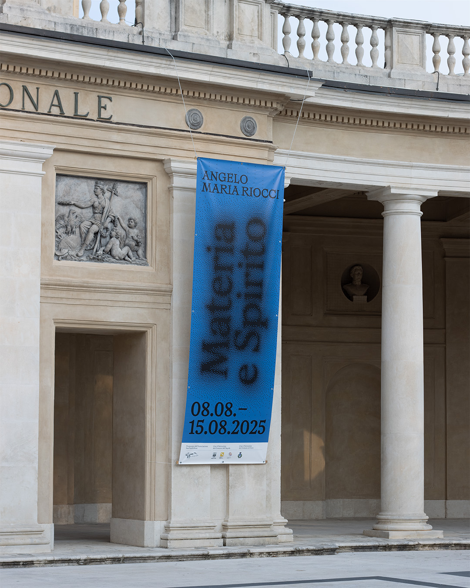
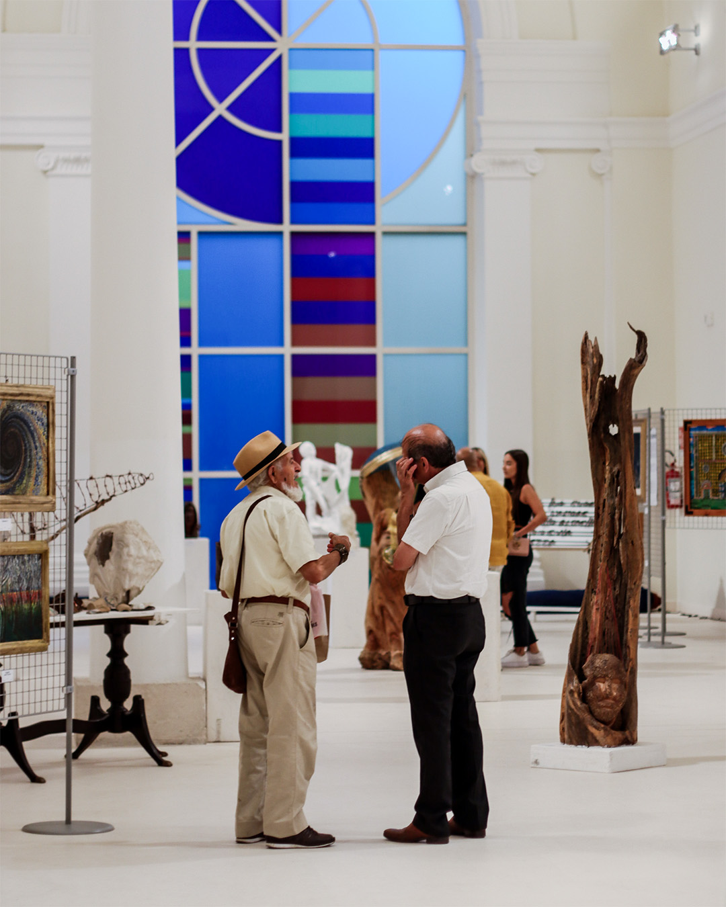
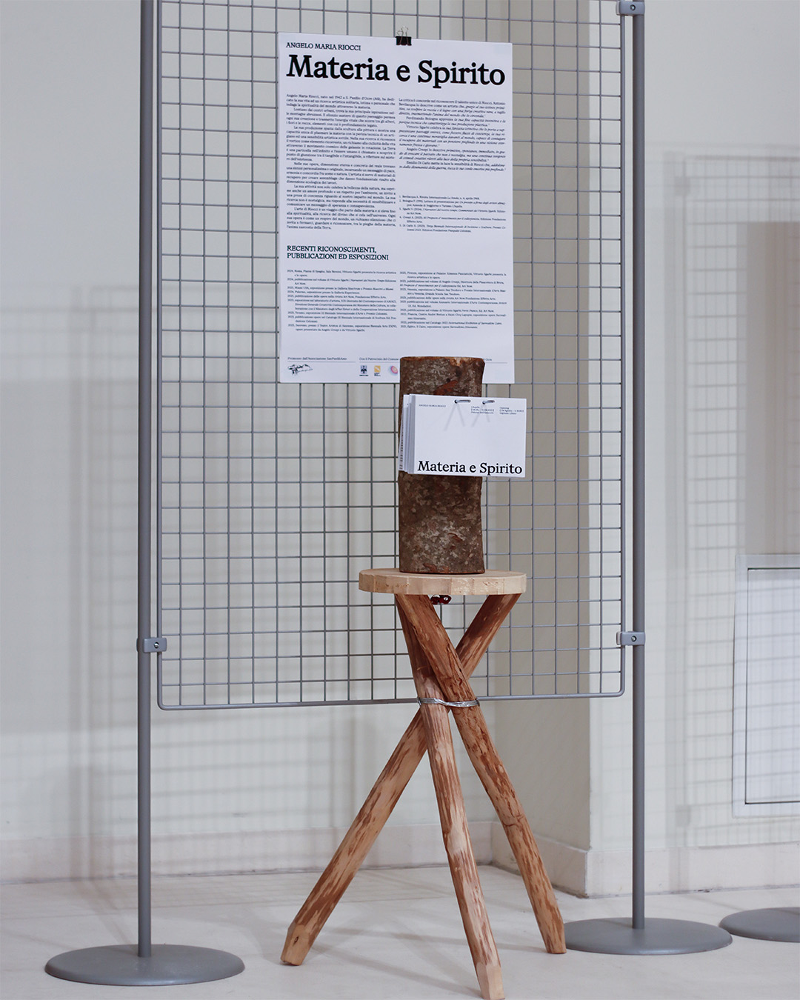
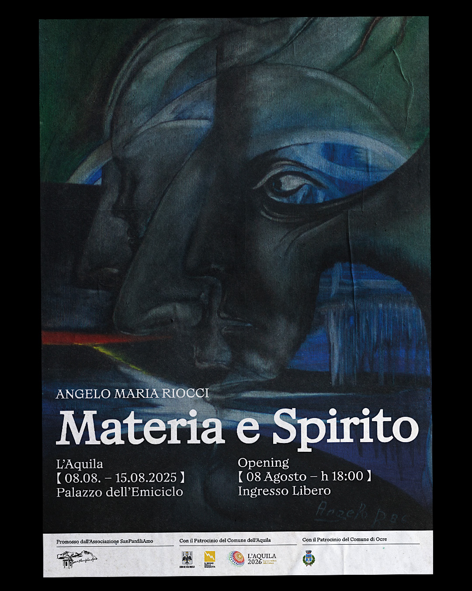
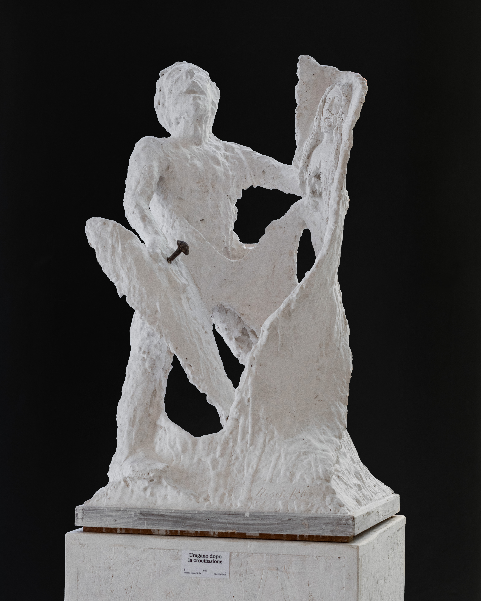

03
Materia e Spirito
[2023] [Branding]
Curatorship, visual identity, and exhibition design for the solo show of the artist
Angelo Maria Riocci, held in L’Aquila at Palazzo dell’Emiciclo from August 8 to 15, 2025.
The contrast between matter and spirit is a fundamental concept that characterizes Riocci’s
artistic practice. This theme is visually translated through the use of typography that gradually
disintegrates into particles, creating a tension between detail and overall view, proximity and distance, matter and spirit.




